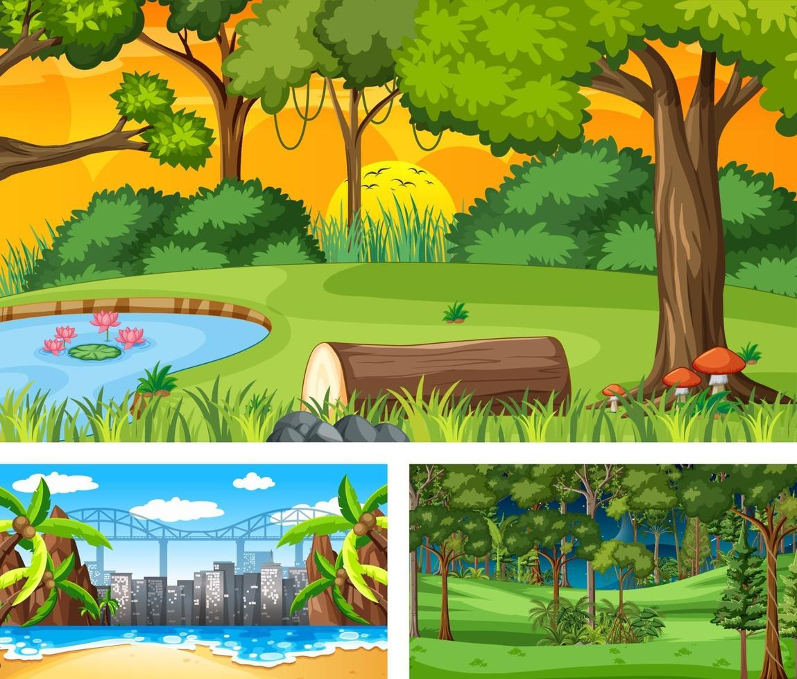

Bienvenido a mi sitio web
En este espacio encontrarás todas las actividades que voy a realizar en la segunda y tercera parcial de la asignatura de Programación en Internet I, asignatura dentro del programa Técnico Analista Programador del Bachillerato 8 de la Universidad de Colima